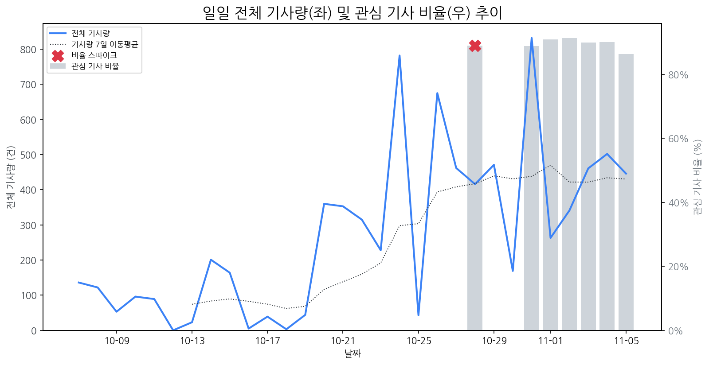

1
시장 활동량 및 이상 징후

전체 기사량 (2025-11-05)
446
-5% WoW
7일 이동평균 대비
< ±2σ
2
오늘의 상위 급등신호
1
애플
+4.8σ
애플의 '저가형 맥북' 출시 준비 소식에 대한 시장의 높은 관심과 기대감이 반영된 결과로 분석됨.
Related Metrics
금일 언급량: 29, 전일 대비: +20
Interpretation (AI)
애플, 전략 변화 시사
Next Step
핵심 토픽 'MicroLED_Topic' 관련 신호입니다. 5번 섹션(리스크)에서 해당 토픽의 감성 변동을 교차 확인하세요.
2
맥북
+4.6σ
애플이 저가형 맥북 출시를 준비한다는 소식이 확산되며, 소비자 기대 심리가 반영된 것으로 보입니다.
Related Metrics
금일 언급량: 15, 전일 대비: +11
Interpretation (AI)
애플, 대중화 전략 시도?
Next Step
'맥북' 관련 상세 기사 및 경쟁사 반응 모니터링
3
퀄컴
+3.5σ
퀄컴 4분기 실적 호조 및 갤럭시S26 스냅드래곤 탑재 전망에도 불구, 주가 하락하며 시장의 복합적 반응이 나타남.
Related Metrics
금일 언급량: 9, 전일 대비: +9
Interpretation (AI)
실적과 주가 괴리, 불안심리 반영
Next Step
'퀄컴' 관련 상세 기사 및 경쟁사 반응 모니터링
4
올레드
+2.0σ
LG 올레드 TV의 CES 최고 혁신상 4년 연속 수상 소식이 올레드 키워드 관심 급증의 핵심 원인입니다.
Related Metrics
금일 언급량: 5, 전일 대비: +5
Interpretation (AI)
올레드, 고성능 입증
Next Step
'올레드' 관련 상세 기사 및 경쟁사 반응 모니터링
3
오늘의 리스크 신호: 키워드 감성분석
금일 감성 급락으로 인한 리스크 신호는 포착되지 않았습니다.
4
주요 기업 EVENTS
금일 감지된 주요 이벤트가 없습니다.
5
오늘의 주요 기사
애플 아이폰용 프로세서 탑재 '보급형 맥북' 출시 앞둬, 600달러 안팎 예...
애플이 아이폰에 탑재되는 프로세서를 탑재하는 보급형 맥북을 내년 상반기 중 출시할 것이라는 보도가 나왔다. 블룸버그는 5일 관계자로부터 입수한 정보를 인용해 “애플이 중저가형 맥북으로 윈도 PC 및 크롬북과 경쟁하겠다는 계획을 세우고 있다고 보도했다.
초슬림·폴더블 이어 저가형 맥북까지…애플, 체질 변화 나선다
스마트폰 폼팩터 개발에 나선 데 이어 저가형 맥북 출시를 준비하며 체질 개선에 속도를 내고 있는 애플은 내년 상반기에 ‘저가형 맥북’ 출시를 준비 중이며 코드명 ‘J700’으로 불리는 신형 노트북은 내부 테스트 중이며 해외 협력업체를 통한 초기 생산 단계에 접어들었다는 것이다.
애플 저가 시장 진출하나..."가성비 맥북 출시 준비"
애플이 저가형 노트북 시장에 처음으로 진출할 준비를 하고 있다고 블룸버그 통신이 복수의 소식통을 인용해 5일 보도한 소식통에 따르면 애플은 웹서핑과 문서 작업, 간단한 미디어 편집 등을 주로 하는 사람들을 겨냥해 저가 노트북을 개발 중인 것으로 전해졌으며 코드명 'J700'으로 알려진 해당 기기는 내년 상반기 출시를 목표로 현재 애플 내부에서 테스트 중이며 해외 공급업체들과 초기 생산 단계에 있다고 블룸버그는 전했습니다.